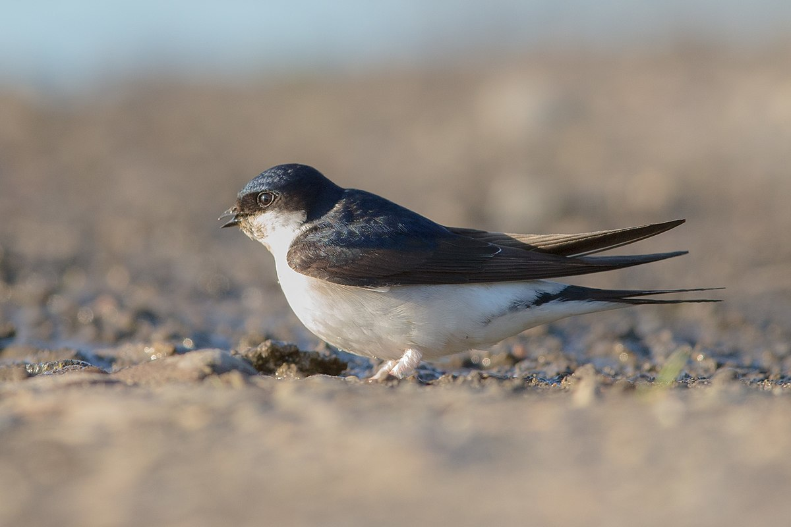

<!DOCTYPE html>
<html lang="en">
<head>
    <meta charset="UTF-8">
    <meta name="viewport" content="width=device-width, initial-scale=1.0">
    <title>Птицы</title>
    <link rel="stylesheet" href="stylecat.css">

</head>

<body>
<header>
    <div class="logo">Красная книга</div>
</header>

<main>
    <section class="intro">
    </section>

    <section class="animals">
        <h2>Птицы из Красной книги</h2>
        <div class="animal-cards">
            <div class="animal-card">
                
                <h3>Черношейная поганка (отряд Поганкообразные, семейство Поганковые)</h3>
				<p>Категория редкости 1 – вид, находящийся на территории Москвы под угрозой исчезновения. Занесён в Приложение 1 к Красной книге Московской области.</p>
				<p>я. Немногочисленный гнездящийся перелётный вид.
				Черношейная поганка поселяется на неглубоких (до 1 м) заросших у берегов стоячих
				водоёмах с островками, сплавинами и учасками открытой воды. Вблизи колоний чайковых птиц для неё характерны групповые поселения. В условиях Москвы гнездится только под защитой колоний чайковых птиц на
				непригодных для рекреации и малопосещаемых водоёмах. Групповые поселения в Москве отмечали на иловых площадках очистных сооружений, одиночные выводки – на
				водоёмах с заболоченными и заросшими
				околоводной растительностью берегами, в
				подтопленных речных поймах. Гнездо устраивает на кочках, плавающей ветоши, в зарослях полупогружённой растительности,
				но всегда вблизи открытой воды. Обязательное условие – наличие маскирующей гнездо
				прошлогодней растительности. Если водоём
				часто посещается людьми, птиц постоянно
				вспугивают с гнезда, и кладка, как правило,
				становится добычей серых ворон, особенно
				вне крупных колоний чаек. Сплошное зарастание поверхности воды заставляет взрослых птиц уводить птенцов в другое место.
				Черношейные поганки питаются и выкармливают птенцов в основном животной пищей, но, в отличие от крупных видов поганок,
				преимущественно не рыбой, а водными насекомыми и их личинками, моллюсками, ракообразными и подобной добычей. Реже потребляют головастиков, мелкую рыбу и растительные корма. Уязвимость этой поганки
				подтверждается тем, что даже в природных
				условиях значительная часть гнёзд погибает
				по разным причинам. Обитание в черте города черношейной поганки свидетельствует о
				сохранении здесь высокопродуктивных водных экосистем, отличающихся разнообразием и обилием беспозвоночных животных.</p>
            </div>
            <div class="animal-card">
                
                <h3>Большая поганка(отряд Поганкообразные, семейство Поганковые)</h3>
				<p>Категория редкости 3 – уязвимый в условиях Москвы вид</p>
				<p>Немногочисленный, местами обычный, гнездящийся перелётный вид. В Москве, как и в
				Московской обл., места гнездования чомги приурочены к высокопродуктивным, в том числе искусственным водоёмам, в которых
				водится много мелкой рыбы. Для размножения чомга выбирает средние и крупные
				водоёмы с хорошо развитой прибрежной растительностью и открытыми плёсами. Гнёзда часто размещаются под защитой
				колоний озёрных чаек, и в таких условиях образуются гнездовые группировки. Но, например, на Нижнем Царицынском пруду
				чомги формируют поселение и в отсутствии колонии чаек. В Москве гнёзда, как правило, устраивают в сильно подтопленных зарослях тростника,
				но могут гнездиться и совершенно открыто, на мелководном водоёме, на небольших кочках из растительного
				и бытового мусора. Маленькие птенцы, отбившиеся от родителей (например, в результате распугивания людьми), обычно погибают, чаще всего становясь добычей
				ворон. После гибели кладки или выводка, а иногда и после успешного размножения,
				чомга гнездится повторно. Гнездование чомги – индикатор высокой биологической продуктивности городского водоёма, в
				частности это свидетельствует о наличии в нём мелкой рыбы.</p>
            </div>
			<div class="animal-card">
                
                    <h3>Большая выпь (отряд Аистообразные, семейство Цаплевые)</h3>
				<p>Категория редкости 1 – вид под угрозой исчезновения. Занесён в Приложение 1 к Красной книге Московской области</p>
				<p>Перелётный вид, типичный обитатель густых зарослей околоводной растительности – тростниковых крепей, участков рогоза и камыша вдоль берегов стоячих или медленно
				текущих водоёмов. Выпи проводят в таких укрытиях практически всё время, очень
				редко перелетая над ними или появляясь у их кромки. Активны в светлое время суток. Самцы выдают себя громким характерным
				голосом, поэтому в гнездовой период присутствие выпи легко обнаружить. Кормятся
				в основном рыбой и водными беспозвоночными, реже лягушками, головастиками, рептилиями или грызунами. Гнёзда также располагают в зарослях околоводной растительности,
				помещая относительно небольшие постройки на заломах тростника и на
				других, не затапливаемых основаниях.</P>
            </div>
			<div class="animal-card">
                
                    <h3>Волчок/малая выпь (отряд Аистообразные, семейство Цаплевые)</h3>
				<p> Категория редкости 1 – вид под угрозой исчезновения. Занесён в Красную книгу Московской области.</p>
				<p>Перелётный вид, типичный обитатель зарослей густой околоводной растительности – тростниковых крепей, участков камыша и рогоза,
				в том числе, с вкраплением кустарников. Гнёзда размещает на кочках, на заломах тростника, между вертикальными стеблями
				растений или на кустах над водой. Кормится также в густых околоводных зарослях,
				активно собирая или подкарауливая добычу – мелкую рыбу, лягушек, головастиков, водных и наземных беспозвоночных, в том
				числе насекомых. Может разорять гнёзда мелких птиц. Ведёт скрытный образ жизни,
				обнаруживает себя в гнездовой период или нечасто издаваемыми звуками, или перелётами между куртинами тростника или рогоза.
				Обычно гнездится отдельными парами.</p>
            </div>
			<div class="animal-card">
                
                    <h3>Серая цапля(отряд Аистообразные, семейство Цаплевые)</h3>
				<p>Категория редкости 0 на территории Москвы в границах до 2012 г. – прекративший гнездиться вид. Категория редкости 3 на присоединённой территории – уязвимый вид..</p>
				<p>Перелётный вид крупных околоводных птиц. Гнездится колониями в окрестностях крупных водоёмов, в Московской обл. – близ комплексов
				рыборазводных прудов, водохранилищ и озёр. Колонии могут насчитывать десятки, иногда сотню крупных гнёзд, обычно расположенных в кронах хвойных и лиственных
				деревьев, реже – в крупных зарослях тростников. Птица осторожна, редко устраивает
				гнездовье рядом с поселением человека. Кормится обычно по берегам водоёмов: не
				только рыбой, но и лягушками, грызунами, иногда крупными насекомыми. Собиратькорм может в нескольких километрах от гнездовой колонии.</p>
            </div>
			<div class="animal-card">
                
                    <h3>Чирок-свистунок (отряд Гусеобразные, семейство Утиные)</h3>
				<p>Категория редкости 1 – вид, находящийся на территории Москвы под угрозой исчезновения. Занесён в Приложение 1 к Красной книге Московской области как вид, нуждающийся в постоянном контроле и наблюдении</p>
				<p>В пределах Москвы места размножения чирка-свистунка приурочены к крупным лесным массивам или к большим озёрам с заросшими лесом заболоченными берегами. В Лосином
				Острове и Измайловском лесу выводки отмечали на осушительных канавах со стоячей
				водой или на оставшихся после выработки
				торфа мелководных водоёмах в поймах лесных речек. На оз.Чёрное в Косине выводок держался в обрамлённом зарослями
				ивняка узком заливе с сильно заболоченными и покрытыми лесом берегами. Во всех случаях свистунки выводили утят на
				значительном удалении от города, на водоёмах, мало посещаемых людьми. Свистунки
				чутко реагируют на загрязнение воды или на сильное зарастание местообитания нитчатыми водорослями, избегают они и водоёмов,
				на дне которых накопился толстый слой полуразложившегося лиственного
				опада. Гнездо размещают вблизи водоёмов на малопривлекательных заболоченных
				участках, под прикрытием кустарников или болотного высокотравья. Главная причина
				гибели кладок или маленьких утят в черте Москвы – серые вороны, которые в апрелемае особенно активно обследуют берега
				лесных водоёмов и следуют за человеком,
				ожидая вспугивания гнездящихся птиц. В городских лесах свистунок может служить
				индикатором сохранения относительно чистых водоёмов с ненарушенными берегами
				и низкой антропогенной нагрузкой</p>
			</div>
			<div class="animal-card">
                
                    <h3>Чирок-трескунок (отряд Гусеобразные, семейство Утиные)</h3>
				<p>Категории редкости 1 – вид, находящийся на территориия Москвы под угрозой исчезновения</p>
				<p>Чирок-трескунок предпочитает гнездиться на пойменных лугах, открытых травянистых берегах озёр, на верховых и низинных болотах,
				которых в Москве почти не осталось. Эта мелкая утка относительно легко приспосабливается к обитанию на техногенных водоёмах очистных сооружений, где для неё
				складываются благоприятные защитные и кормовые условия. Иногда трескунки подолгу держатся на зарастающих прудах в
				многолюдных городских лесопарках. Самка устраивает гнездо на сухом участке под защитой прошлогодней травы или мелкого
				кустарника, на моховой сплавине и в других тому подобных местах. Питание трескунка
				смешанное, в него входят как водные беспозвоночные, так и семена, клубни и вегетативные части водных растений.
				Чирки-трескунки – индикаторы сохранени</p>
            </div>
			<div class="animal-card">
                
                    <h3>Серая утка (отряд Гусеобразные, семейство Утиные)</h3>
				<p>Категория редкости 1 – вид, находящийся под угрозой исчезновения. Занесён в Красную книгу Московской области.</p>
				<p>На территорию Москвы и Московской обл. серая утка проникла из лесостепи и степи по мере
				увеличения площадей открытых луговых пойм, а также из-за разработки торфяных болот, расширения пойменных сельскохозяйственных земель. С 1990-х гг. начался
				этап быстрого расселения серой утки на северо-запад [2], но её численность подвержена сильным межгодовым колебаниям.
				Гнездится на неглубоких, хорошо прогреваемых, богатых водной растительностью
				водоёмах, в том числе на пойменных озёрах и прудах рыбхозов. Питается главным образом листьями и побегами водных, а также
				нежными частями наземных растений. Беспозвоночные играют в питании небольшую роль. На территории Москвы в границах до
				2012 г. после благоустройства берегов и застройки очистных сооружений серая утка практически утратила условия, необходимые для размножения</p>
            </div>
			<div class="animal-card">
                
                    <h3>Широконоска (отряд Гусеобразные, семейство Утиные)</h3>
				<p>Категория редкости 1 – вид, находящийся на территории Москвы под угрозой исчезновения.</p>
				<p>. В природных условиях широконоска гнездится на старицах среди заливных пойменных лугов,
				на островах, на заросших тростником заболоченных окраинах озёр и избегает глухих лесных водоёмов. В черте Москвы она
				гнездилась на иловых площадках очистных
				сооружений – искусственном аналоге водно-болотного комплекса, а также во влажных луговых понижениях в Братеевской и
				Мнёвниковской поймах. В условиях города тяготеет к колониям чаек, защищающих занятую ими территорию от серых ворон и
				других хищников. Гнездо устраивает вблизи воды на сухом месте в густых зарослях
				мелкого ивняка или высокотравья. Широконоска более других уток чувствительна к фактору беспокойства и хуже переносит
				рекреационное использование берегов. Несомненно, на благополучие широконоски
				влияет конкуренция с более многочисленной кряквой, часто вытесняющей её из пригодных для гнездования местообитаний.</p>
			</div>
			<div class="animal-card">
                
                    <h3>Красноголовый нырок (отряд Гусеобразные, семейство Утиные)</h3>
				<p>Категория редкости 1 – вид, находящийся на территории Москвы под угрозой исчезновения. Занесён в Приложение 1 к Красной книге Московской области</p>
				<p>Красноголовый нырок занимает довольно глубокие озёра с зарослями околоводной растительности по берегам и с открытыми плёсами, гнездится на сплавинах
				и в прибрежных зарослях. Питание смешанное, но в рационе преобладает растительная пища, особенно зимой.
				В ХХ в. численность красноголового нырка в Европейской России заметно возросла, а ареал расширился к северу.
				Рост численности стал более заметным в середине столетия, что было связано с масштабным строительством различных техногенных водоёмов.
				Во многих регионах значительная часть популяции населяет искусственно созданные водно-болотные угодья. С начала 1990-х гг. происходило
				сокращение численности нырков на европейских зимовках. Параллельно резкое ухудшение условий гнездования и кормёжки на прудах
				рыбхозов с 1990-х гг. привело к катастрофическому снижению численности красноголового нырка в Московской области. Красноголовые нырки, обитавшие на
				городских очистных сооружениях, так же как чомги, лысухи и другие водоплавающие
				птицы, стараются найти пригодные к гнездованию биотопы в урбанизированной среде, а не на природных территориях.
				В Москве из пяти известных в 2000-х гг. мест размножения самое большое скопление находилось на иловых площадках
				вблизи колоний озёрных чаек. В середине 2010-х гг. произошло сокращение численности чаек уже и в колониях на Люберецких очистных сооружениях
				в связи с их постепенной ликвидацией, а вместе с ним – и падение численности нырковых уток.</p>
            </div>
			<div class="animal-card">
                
                    <h3>Хохлатая чернеть (отряд Гусеобразные, семейство Утиные)</h3>
				<p>Категория редкости 3 – уязвимый на территории Москвы вид. Гнездовая популяция внесена в Приложение 1
				Красной книги Московской области как нуждающаяся в постоянном контроле и наблюдении.</p>
				<p>Немногочисленный гнездящийся и зимующий вид. В городах выводки хохлатой чернети появляются на естественных и искусственных
				водоёмах на природных территориях, в парках и на очистных сооружениях. У этой утки отчётливо выражена привязанность к колониям озёрных чаек,
				однако в меньшей степени, чем у красноголового нырка, что позволяет ей более широко расселяться по
				городу. В городе гнёзда чаще всего устраиваются в загущенных куртинах декоративных кустарников, на участках с зарослями
				сорного высокотравья и крапивы. Чернеть плохо переносит загрязнение городских прудов и озер и может служить индикатором
				относительно чистых водоёмов</p>
            </div>
			<div class="animal-card">
                
                    <h3>Гоголь (отряд Гусеобразные, семейство Утиные)</h3>
				<p>Категория редкости 1 – вид, находящийся на территории Москвы под угрозой исчезновения. Гнездовая популяция занесена в Приложение 1 к Красной
				книге Московской области, как нуждающаяся в постоянном контроле и наблюдении</p>
				<p>В Москве гоголь гнездится вблизи малозагрязнённых водоёмов в старых парках и лесных массивах. Гнёзда устраивает в крупных дуплах,
				особенно выдолбленных желной, в кучах хвороста, других укрытиях или искусственных гнездовьях-гоголятниках. Благодаря
				гнездованию в дуплах благополучно выводит птенцов, несмотря на высокую численность серых ворон. В последние годы, однако,
				серьезную угрозу для гоголей представляют размножившиеся в Москве серебристые чайки, нападающие даже на взрослых
				самок. Так, в Московском Зоопарке выводки гоголя в последние годы уничтожаются серебристыми чайками, а на Терлецких
				прудах самка была сбита серебристой чайкой на подлёте к дуплянке. Поскольку гоголь питается животной пищей, для него
				важно наличие водоёмов, богатых беспозвоночными и мелкой рыбой.</p>
            </div>
			<div class="animal-card">
                
                    <h3>Обыкновенный сокол (отряд Соколообразные, семейство Ястребиные)</h3>
				<p>Категория редкости 0 на территории Москвы в границах до 2012 г. – прекративший гнездиться вид. Категория
				редкости 1 на присоединённой территории – вид под угрозой исчезновения. Занесён в Красную книгу Московской области и
				Приложение II к Конвенции СИТЕС.</p>
				<p>Лесная хищная птица, отличается специфическими трофическими адаптациями, поздними
				сроками прилёта и невысокой численностью даже в природных местообитаниях.Гнездится в лесных массивах, располагая
				относительно крупные гнёзда высоко на деревьях, в целом чаще у просек, опушек и полян. Кормится в основном личинками
				перепончатокрылых насекомых (ос, пчёл и шмелей), в значительно меньшей степени – мелкими позвоночными.</p>
            </div>
			<div class="animal-card">
                
                    <h3>Чёрный коршун (отряд Соколообразные, семейство Ястребиные)</h3>
				<p>. Категория редкости 0 на территории Москвы в границах до 2012 г. –
				прекративший гнездиться вид. Категория
				редкости 2 – редкий вид на присоединённой территории. Занесён в Красную книгу Московской области и в Приложение II к Конвенции СИТЕС.</p>
				<p>Хищная перелётная птица средних размеров. В своём
				распространении тяготеет к территориям,
				на которых присутствуют лесные массивы,
				открытые территории и водоёмы. Гнездит- ся на деревьях, часто в пойменных лесах,
				использует одни и те же постройки по несколько лет. Питание разнообразно, помимо охоты на мелкую добычу – птиц, рептилий, амфибий и грызунов, нередко поедает
				погибшую или ловит живую рыбу, сбитых
				на дорогах животных, подранков, больных
				животных, птенцов, посещает свалки и следует за сельскохозяйственной техникой
				при покосах или вспашке.</p>
            </div>
			<div class="animal-card">
                
                    <h3>Полевой лунь (отряд Соколообразные, семейство Ястребиные)</h3>
				<p>Категория редкости 0 на территории Москвы в границах до 2012 г. – прекративший гнездиться вид. Категория
				редкости 1 на присоединённой территории – вид под угрозой исчезновения. Занесён в Красную книгу Московской области и
				Приложение II к Конвенции СИТЕС</p>
				<p>Перелётный вид. Гнездится в безлесных участках – по
				окраинам брошенных полей на ранних стадиях их зарастания кустарником и древесным подростом, более охотно, чем другие
				луни, заселяет вырубки, гари, крупные лесные поляны и даже неширокие поймы лесных рек. Гнездо на земле, гнездится отдельными парами.
				Кормится в основном мелкими грызунами, от обилия которых зависитгнездовая численность и собственно возможность гнездования вида</p>
            </div>
			<div class="animal-card">
                
                    <h3>Луговой лунь (отряд Соколообразные, семейство Ястребиные)</h3>
				<p>Категория редкости 0 на территорииМосквы в границах до 2012 г. – прекративший гнездиться вид. Категория редкости 1 на присоединённой территории –
				вид под угрозой исчезновения. Занесён в Красную книгу Московской области и Приложение II к Конвенции СИТЕС.</p>
				<p>Перелётная хищная птица открытых пространств. Пластичен в выборе мест гнездования, наземные, относительно некрупные гнёзда располагает в высокой травянистой растительности на зарастающих
				или обрабатываемых полях, на самых разнообразных луговых участках, залежах, пустошах и в высокотравье на месте заброшенных деревень или
				ферм. Питание также очень разнообразно, рацион, помимо мышевидных грызунов, включает мелких птиц, в том числе слётков
				и птенцов, ящериц, амфибий и крупных насекомых. В местах с богатым высокотравьем, зарослями крапивы или полыни несколько пар могут формировать небольшие
				рыхлые гнездовые колонии.</p>
            </div>
			<div class="animal-card">
                
                    <h3>Болотный лунь (отряд Соколообразные, семейство Ястребиные)</h3>
				<p>Категория редкости 1 – вид под угрозой исчезновения. Занесён в Приложение II к Конвенции СИТЕС.</p>
				<p>Вид луней, в значительной степени пространственно и
				трофически связанный с околоводными местообитаниями. Гнездится в зарослях тростника или рогоза, располагая гнёзда на заломах тростника, кочках или других сухих
				местах. Охотится и у водоёмов, и на окружающих открытых территориях на грызунов, мелких птиц, амфибий и рептилий, способен ловить относительно крупную добычу (куриные птицы, утки, ондатры). Подобия
				гнездовых колоний не образует</p>
							</div>
			<div class="animal-card">
                
                    <h3>Тетеревятник (отряд Соколообразные, семейство Ястребиные)</h3>
				<p>Категория редкости 5. Занесён в Приложение II к Конвенции СИТ.</p>
				<p>Особенности обитания. Лесная хищная птица с широким спектром питания; в
				городских лесах и в их окрестностях в значительной степени, по крайней мере, в зимний период, трофически связана с сизыми
				голубями. Охотится, активно ища и преследуя добычу, в первую очередь птиц, или из
				засады, подолгу неподвижно поджидая появления потенциальной жертвы. Имеющиеся сведения о рационе тетеревятника свидетельствуют о стабильно хорошем состоянии кормовой базы в городе. Крупные гнёзда располагает в кронах и использует по нескольку лет, новые гнёзда нередко строит
				неподалёку от предыдущих. Начинает гнездиться рано, в феврале. Тетеревятники илиоседлы (держатся в окрестностях гнездовых участков круглый год), или широко перемещаются по территориям городских лесов в осенне-зимний период. Селятся в относительно крупных лесных массивах, на
				своих гнездовых участках представляют
				опасность для сов и перепелятников.</p>
            </div>
			<div class="animal-card">
                
                    <h3>Пеперелятник (отряд Соколообразные, семейство Ястребиные)</h3>
				<p>с. Категория редкости 3 – уязвимый вид. Занесён в Приложение II к Конвенции СИТЕС.</p>
				<p>. Малозаметный, скрытно ведущий себя некрупный
				лесной хищник. В период размножения
				редко обнаруживает себя, в том числе на
				гнездовом участке, из-за чего данные о
				численности гнездящихся пар могут быть
				несколько занижены. По многу лет использует для размножения одни и те же участки
				леса, чаще всего ельники, реже участки с
				соснами и лиственницами, ещё реже – лиственные древостои, но обычно каждый
				год строит новое гнездо. Гнездится позже
				тетеревятника, начиная с апреля. В зимний период и в период миграций относительно обычен в жилых кварталах по всей
				территории городской застройки, кормится
				в первую очередь воробьями, синицами
				(в том числе около кормушек), другими
				мелкими воробьиными птицами и изредка
				голубями. В период гнездования распределяется по городским лесам и паркам и
				переходит на охоту в основном за мелкими
				лесными воробьиными птицами. Как и тетеревятник, применяет и активный поиск
				добычи, и её подкарауливание.</p>
			</div>
			<div class="animal-card">
                
                    <h3>Канюк (отряд Соколообразные, семейство Ястребиные)</h3>
				<p> Категория редкости 1 – вид
				под угрозой исчезновения на территории
				Москвы в границах до 2012 г. Категория
				редкости 3 – уязвимый вид на присоединённой территории. Занесён в Приложение
				II к Конвенции СИТЕС</p>
				<p>Канюк – типичный обитатель территорий, на которых
				обширные открытые участки (залежи, сенокосы, поля) граничат с лесными массивами, небольшими рощами или перелесками.
				Гнездовая стация – различные древостои.
				Свои относительно крупные гнёзда канюк
				размещает в кронах деревьев, обычно на
				опушках или в приопушечной полосе леса,
				реже в глубине лесного участка. Кормовая
				стация – различные открытые территории.
				Основная добыча – мелкие грызуны, в значительно меньшей степени мелкие птицы,
				земноводные и пресмыкающиеся, иногда
				насекомые и моллюски. Перелётный вид,
				некоторая часть птиц остаётся на зимовку в
				средней полосе России. Обычно занимают
				одно и то же гнездо по нескольку лет.</p>
            </div>
			<div class="animal-card">
                
                    <h3>Сапсан (отряд Соколообразные, семейство Ястребиные)</h3>
				<p>. Категория редкости 1 – вид
				под угрозой исчезновения. Внесён в Красные книги Российской Федерации и Московской области, а также в Приложение I
				к Конвенции СИТЕС.</p>
				<p>. Размещают
				гнёзда на высотных зданиях в нишах и других укрытиях, гнездятся в одних и тех же местах по многу лет и придерживаются своих
				участков или круглый год, или большую часть
				годового цикла. Данных по успеху размножения недостаточно, известны случаи гибели слётков, но причины гибели не известны.
				Анализ состава жертв и прямые наблюдения
				свидетельствуют о том, что помимо голубей,
				которые составляют основу питания, рацион сапсанов в Москве включает широкий
				спектр видов птиц, и что эти хищники не испытывают дефицита кормов [4]. Очень редко, помимо птиц, сапсаны добывают мелких
				грызунов, летучих мышей и даже крупных
				насекомых.</p>
            </div>
			<div class="animal-card">
                
                    <h3>Чеглок (отряд Соколообразные, семейство Ястребиные)</h3>
				<p>Категория редкости 2 – редкий вид. Занесён в Приложение II к Конвенции СИТЕС.</p>
				<p>Мелкий сокол, охотится в воздухе, способен ловить
				насекомых, летучих мышей и даже ласточек и стрижей. Гнездится в городе обычно высоко в кронах лиственных деревьев
				(тополя и др.) или, реже, на опорах ЛЭП,
				занимая старые гнёзда врановых птиц, в
				первую очередь серых ворон, реже – воронов. Гнездится позже других хищных птиц, в
				период выкармливания птенцов пары обнаруживают себя, часто подавая голос. Гнездящиеся пары заселяют опушки городских
				лесов и, кажется, даже в большей степени
				тяготеют к отдельным группам деревьев на
				озеленённых территориях больниц, кладбищ и даже стадионов. Перелётный вид.</p>
            </div>
			<div class="animal-card">
                
                <h3>Обыкновенная пустельга (отряд Соколообразные, семейство Ястребиные)</h3>
				<p>Категория редкости 3 – уязвимый вид. Занесён в Приложение 1 к Красной книге Московской области и Приложение II к Конвенции СИТЕС</p>
				<p>Некрупная хищная птица, специализирующаяся на добыче мелких наземных грызунов, а в годы
				их низкой численности – насекомых, ящериц и слётков птиц. Гнездится в оставленных постройках других птиц, прежде всего
				врановых, иногда пустельга сама сооружает некоторое подобие гнездовой подстилки в нишах под крышами зданий или в вентиляционных отдушинах чердаков. Как уже
				было указано, иногда гнездятся в Москве
				небольшими рыхлыми колониями, что гораздо более характерно для южных районов области обитания вида. Типична охота над полями, лугами, пустошами и другими открытыми участками. Перелётный вид,
				отдельные особи остаются в городе на зимовку.</p>
            </div>
			<div class="animal-card">
                
                <h3>Рябчик (отряд Курообразные, семейство Тетеревиные)</h3>
				<p> Категория редкости 0 на территорииМосквы в границах до 2012 г. – прекративший гнездиться вид. Категория редкости 3 на присоединённой территории –
				уязвимый вид. Занесён в Приложение 1 к
				Красной книге Московской области.</p>
								<p>Некрупная
				оседлая и кочующая куриная птица. Населяет старовозрастные, в основном сложные
				хвойные леса с хорошо развитым подростом и подлеском. Гнездится на земле. Питание смешанное и разнообразное, птенцы,
				покинув гнездо после вылупления, в основном кормятся насекомыми и пауками, постепенно дополняя рацион ягодами, побегами и другими растительными кормами; в
				зимний период основу питания составляют
				семена и почки, иногда жёлуди. Осторожны,
				из-за обилия людей и домашних животных
				фактически не могут гнездиться в городских лесах и, тем более, в парках.</p>
            </div>
			<div class="animal-card">
                
                <h3>Серая куропатка (отряд Курообразные, семейство Фазановые)</h3>
				<p> Категория редкости 2 – малочисленный вид. Занесён в Приложение 1 к
				Красной книге Московской области</p>
				<p>Типичный обитатель открытых территорий с разнообразным травостоем и небольшими по площади участками кустарников, в том числе
				просек ЛЭП, пустырей, окраин возделываемых полей и других подобных мест. В основном растительноядный вид, питается семенами, листьями и побегами трав, до некоторой степени разнообразит рацион насекомыми и другими беспозвоночными. Гнёзда
				располагаются на земле, по окончании размножения и зимой птицы держатся группами. Осторожны, редко подают голос и могут
				быть пропущены при кратковременном обследовании территории. Оседлый вид, зимой встречается в местах гнездования или
				кочует в окрестностях.</p>
            </div>
			<div class="animal-card">
                
                <h3>Перепел (отряд Курообразные, семейство Фазановые)</h3>
				<p>Категория редкости 1 – вид, находящийся под угрозой исчезновения. Занесён в Приложение 1 к Красной книге Московской области</p>
				<p>Перелётный вид, типичный обитатель полей и
				лугов, в том числе в поймах рек. Предпочитает травостой высотой от 20 см до 1 м,
				избегает голой почвы, влажных участков и
				непосредственной близости древесно-кустарниковой растительности [7]. Обычно
				обнаруживает себя только голосом, который самцы издают как на местах гнездования,так и на пролёте. Другие наблюдения, в
				том числе наблюдения, свидетельствующие
				о гнездовании вида, крайне редки из-за
				того, что перепела проводят почти всё время на земле, скрываясь в траве. Всеядный
				вид, в рационе присутствуют как семена и
				зелёные части растений, так и, в меньшей
				степени, членистоногие и другие беспозвоночные. Гнёзда устраивает на земле, также
				под покровом травянистых растений; самки насиживают кладки и водят птенцов без
				участия самцов</p>
            </div><div class="animal-card">
                
                <h3>Погоныш (отряд Журавлеобразные, семейство Пастушковые)</h3>
				<p> с. Категория редкости 1 – вид, находящийся под угрозой исчезновения. Занесён в Приложение 1 к Красной книге Московской области</p>
				<p>я. Погоныши населяют околоводные местообитания с густой травянистой растительностью – мелководья стоячих или медленно
				текущих водоёмов с богатой, но невысокой надводной
				растительностью, иловые отмели, подтопленные кочкарники и другие обводнённые
				травянистые местообитания, но не заросли
				тростника [4]. Вид обнаруживает своё присутствие практически только при весенней
				вокализации самцов, которая отмечается в основном в вечернее, ночное или ранее
				утреннее время, поэтому без специальных поисков легко может быть пропущен. Перелётный вид, во время миграций встречается в тех же биотопах.
				Гнёзда располагает обычно на кочках недалеко от воды под покровом травянистой растительности</p>
            </div>
			<div class="animal-card">
                
                <h3>Коростель (отряд Журавлеобразные, семейство Пастушковые)</h3>
				<p>Категория редкости 3 – уязвимый вид</p>
				<p>Относительно пластичен в выборе местообитаний. Типичный обитатель лугов с хорошо развитой
				травянистой растительностью, предпочитает заливные луга с кустарниками и дренажными канавами, используемые для сенокоса и слабого выпаса скота, гнездится также
				на пустырях, в высокотравье (бурьян) у посёлков, на травянистых опушках леса и на
				крупных лесных полянах [36]. Самцы после
				прилёта в мае и до начала июля активно подают хорошо известные всем скрипучие однообразные сигналы (в основном вечером
				и ночью), что свидетельствует о вероятном
				гнездовании вида на соответствующей территории. Прямые доказательства гнездования
				(находки гнёзд или встречи выводков) очень
				редки, птицы ведут скрытный образ жизни.
				Питается в основном мелкой животной пищей,
				дополняя рацион семенами и зелёными частями растений. Гнездится на земле.</p>
            </div>
			<div class="animal-card">
                
                <h3>Камышница (отряд Журавлеобразные, семейство Пастушковые)</h3>
				<p>Категория редкости 3 – уязвимый в условиях Москвы вид.</p>
				<p>Немногочисленный перелётный гнездящийся
				вид [2]. На территории Москвы камышница поселяется в природных и искусственных околоводных биотопах. Предпочитает частично заболоченные и заросшие рогозом,
				тростником и плавающими растениями мелководные старицы или пруды с малопривлекательными для рекреации берегами. Выводки камышницы изредка встречаются также в затопленных котлованах,
				заброшенных отстойниках ливневой канализации и др. Обязательны для них густые
				околоводные заросли и открытые участки
				воды. Камышница благополучно выводит
				птенцов даже в парках, производственных
				зонах, вблизи городских улиц. Обычно живёт отдельными парами, не выявляя зависимости от чайковых птиц, выдерживая умеренное техногенное загрязнение водоёма.
				Относительно легко переносит умеренное беспокойство, так как в дневное время обычно скрывается в зарослях, нередко появляясь вместе с выводком на открытой воде. Обследует посторонние предметы
				(автопокрышки и прочий хлам), собирая с
				них беспозвоночных для птенцов. У камышниц в Москве удалось наблюдать помощничество, когда птенцы первого выводка кормят младший выводок вместе с родителями
				[3, 4, 8]. Иногда камышница не пренебрегает подкормкой, что особенно часто проявляется в западноевропейских и даже американских городах [4]. Камышница менее
				других водоплавающих страдает от хищничества серых ворон, которым трудно отыскать гнездо или птенцов среди густых зарослей. В Москве является индикатором
				сохранности высокопродуктивных водноболотных сообществ</p>
            </div>
			<div class="animal-card">
                
                <h3>Лысуха (отряд Журавлеобразные, семейство Пастушковые)</h3>
				<p>Категория редкости 1 – вид, находящийся на территории Москвы под угрозой исчезновения</p>
				<p>Немногочисленный перелётный гнездящийся вид
				[3]. На территории Москвы лысуха выбирает для размножения довольно крупные водоёмы – большие пруды, затопленные карьеры, заливы Москвы-реки, находящиеся
				на значительном удалении от многоэтажной застройки. Облигатной связи с колониями чаек она не проявляет. Обязательным условием гнездования является наличие густых прибрежных зарослей рогоза
				или тростника. На Люблинских очистных
				сооружениях и на Большом Крылатском
				карьере, где лысухи выводили птенцов под
				защитой озёрных чаек, они не нуждались
				в такой густой растительности. Лысухи избегают водоёмов, часто посещаемых людьми, хотя зимой вместе с кряквами отдельные зимующие птицы и берут подкормку.
				Лысуха использует разнообразную растительную пищу, поэтому в черте города легко находит корм почти на любых не слишком грязных мелководных водоёмах. При
				наличии защищенных мест выдерживает
				близость города, и даже в условиях высокой нагрузки становится обычной парковой птицей [13].</p>
            </div>
			<div class="animal-card">
                
                <h3>Малый зуёк (отряд Ржанкообразные, семейство Ржанковые)</h3>
				<p>Категория редкости 1 – вид под угрозой исчезновения. Занесён в Приложение 1 к Красной книге Московской области</p>
				<p>Перелётный вид. В природных условиях малый зуёк населяет песчаные и галечниковые пляжи по
				берегам водоёмов, в городе и пригородах
				охотно селится на территориях, внешне напоминающих упомянутые выше – на сухих
				пустырях, лишённых или почти лишённых
				растительности, на территории заброшенных строек и промзон на участках, лишённых травостоя, на выработанных карьерах,
				днищах спущенных водоёмов и т.п. Кормится насекомыми и предпочитает места, в которых описанные участки граничат с водоёмами.
				Гнездится на этих же открытых участках, настоящего гнезда не строит, яйца откладывает в небольшую ямку, насиживающая птица сливается с окружающим фоном,
				яйца тоже имеют криптическую окраску.
				Держатся отдельными парами. Из-за привязанности к местам с открытым ровным грунтом в городе и пригородах склонны менять
				места размножения в зависимости от наличия таких участков – нередко временны). Со спецификой гнездовых биотопов связано заметное несовпадение мест
				гнездования с ООПТ</p>
            </div>
			<div class="animal-card">
                
                <h3>Чибис (отряд Ржанкообразные, семейство Ржанковые)</h3>
				<p>. Категория редкости 1 – вид под угрозой исчезновения.</p>
				<p>Перелётный
				вид, обитатель разнообразных открытых
				низкотравных сухих и увлажнённых территорий, достаточно пластичен в выборе местообитаний, может гнездиться в местах с
				относительно высокой рекреационной нагрузкой, в том числе рядом с полотном автотрасс и в других подобных местах. Кормится разнообразными насекомыми и другими
				беспозвоночными. На гнездовании может формировать рыхлые колонии (поселения),
				в которых птицы совместно и активно атакуют приближающихся хищников.</p>
            </div>
			<div class="animal-card">
                
                <h3>Черныш (отряд Ржанкообразные, семейство Бекасовые)</h3>
				<p>Категория редкости 2 – редкий вид на территории Москвы в границах
				до 2012 г. Категория редкости 3 – уязвимый вид на присоединённой территории</p>
				<p>Типичный
				обитатель лесных болот, берегов лесных речек и ручьёв, проложенных в лесу дренажных канав и подтопленных придорожных
				понижений. Отличается от других куликов
				тем, что гнездится в старых гнёздах дроздов
				и некоторых других птиц в кронах деревьев,
				иногда на большой высоте. Питается насекомыми и другими водными и околоводными беспозвоночными. Перелётный вид.</p>
            </div>
			<div class="animal-card">
                
                <h3>Травник (отряд Ржанкообразные, семейство Бекасовые)</h3>
				<p>Категория редкости 1 – вид, находящийся на территории Москвы под угрозой исчезновения. Занесён в Красную книгу Московской области как редкий гнездящийся вид.</p>
				<p>Луговой кулик, предпочитающий влажные и сырые местообитания, в том числе техногенные водоёмы, такие, как очистные сооружения и т.п.
				Однако, отсутствие пастбищной нагрузки и
				сенокошения в естественных для травника пойменных луговых угодьях и зарастание их кустарником для него неприемлемо.
				При усилении зарастания, как и при целенаправленном нарушении местообитаний, в
				том числе и в ходе сельскохозяйственного
				использования, особенно – при выжигании
				травы, прекращает не только гнездование,
				но и в целом посещение территории.Т</p>
            </div>
			<div class="animal-card">
                
                <h3>Перевозчик (отряд Ржанкообразные, семейство Бекасовые)</h3>
				<p>с. Категория редкости 1 – вид под угрозой исчезновения.</p>
				<p>Мелкий кулик, типичный обитатель берегов рек и
				озёр, в том числе или даже чаще покрытых
				лесом. Перелётный вид, и в период миграций, и в период размножения птицы держатся у уреза воды, почти никогда не удаляясь от него более чем на 50–100 м. 
				Избегают мест с развитой затопленной растительностью (тростники, заросли рогоза и т.п.)
				или болотных сплавин. Кормятся мелкими
				насекомыми и другими мелкими беспозвоночными, которых собирают на мелководье,
				на выступающих из воды камнях, корягах и
				по берегам у самого уреза воды. Гнездо, а
				точнее ямка, иногда с минимальным количеством гнездового материала, в которую
				отложена кладка, также обычно располагается в прибрежной полосе под прикрытием кустика или куртины травы. В Москве
				известные места гнездования находятся на
				берегах Москвы-реки, Сходни и Химки и, в
				одном случае, на острове паркового пруда в
				небольшой колонии речных крачек</p>
            </div>
			<div class="animal-card">
                
                <h3>Бекас (отряд Ржанкообразные, семейство Бекасовые)</h3>
				<p>Категория редкости 1 – вид под угрозой исчезновения.</p>
				<p>Перелётный вид, типичный обитатель травяных болот
				и других открытых переувлажнённых территорий – болот различных типов в поймах рек и на водоразделах, заливных лугов;
				предпочитает места, граничащие с участками открытой воды. Над такими участками самцы активно токуют, издавая характерные блеющие звуки, 
				самки малозаметны. Гнездо расположено на земле и обычно
				укрыто кочкой или куртиной травы. Типичный приём добычи корма – личинок насекомых и других мелких беспозвоночных – состоит в зондировании мягкой почвы, 
				подстилки и ила за счёт погружения в субстрат длинного клюва.</p>

            </div>
			<div class="animal-card">
                
                <h3>Вальдшнеп (отряд Ржанкообразные, семейство Бекасовые)</h3>
				<p>. Категория редкости 1 – вид
				под угрозой исчезновения на территории Москвы в границах до 2012 г. Категория редкости 3 – уязвимый вид на присоединённой территории</p>
				<p>Крупный лесной кулик, ведущий скрытный образ жизни. Присутствие вида на территории можно определить почти только за счёт
				встреч в вечерние и, реже, ранние утренние часы токующих самцов, летающих над
				лесом, опушками и просеками и издающих
				характерные звуки («хорканье» и «цвирканье»). Гнёзда располагают на земле, самки
				слетают с кладок только при приближении
				хищника или человека на самое минимальное расстояние, находки гнёзд или встречи выводков крайне редки даже в местах с
				относительно высокой численностью вида.
				Кормятся мелкими беспозвоночными, которых собирают на поверхности и внутри лесной подстилки и в верхних слоях мягкой
				рыхлой почвы, для гнездования выбирают участки с наиболее богатыми типами почв. В качестве небольшой по объёму добавки в
				рацион входят растительные корма (ягоды, семена, сочные корешки и побеги). Гнёзда
				в целом чаще располагаются в таких «кормных» местах, это опушки, окраины просек и
				полян с густым подростом и кустарниками, нередко затенённые участки под пологом
				леса с увлажнённой почвой. Присутствие
				вида считается хорошим индикатором ненарушенных или мало нарушенных участков леса.</p>
            </div>
			<div class="animal-card">
                
                <h3>Озёрная чайка (отряд Ржанкообразные, семейство Чайковые)</h3>
				<p>. Категория редкости 2 – немногочисленный в условиях Москвы вид с сокращающейся численностью.</p>
				<p>Озёрные
				чайки селятся как в природных и полуприродных, так и в антропогенных биотопах
				(рыбхозы, очистные сооружения, обводнённые старые торфоразработки и песчаные карьеры, крыши строений, свежие
				торфяные поля). В 2015–2019 гг. в антропогенных биотопах гнездились 27,2 % пар
				озёрных чаек региона [7]. В Москве чайки
				занимают сохранившиеся труднодоступные заболоченные участки, заросшие берега
				прудов и стариц. Вероятно, в ближайшее время получит распространение и гнездование на крышах, которое уже отмечено
				в Московской области, в г. Одинцово [9].
				Благодаря коллективной защите чаек от ворон и других хищников вблизи их колоний
				успешно размножаются другие околоводные и водоплавающие птицы. Урбанизированная популяция тесно связана в питании
				с кормами антропогенного происхождения, главным образом с пищевыми отходами.
				Московские чайки во многом нацелены на поиск корма в урбанизированной среде, а
				не в природных биотопах. Без возможности кормёжки на полигонах твёрдых бытовых отходов формирование массовых поселений становится для них затруднительным
				[6]. В условиях Москвы колонии озёрных – важнейший фактор предотвращения
				гибели выводков водоплавающих и околоводных птиц, в том числе, редких видов.</p>
            </div>
			<div class="animal-card">
                
                <h3>Сизая чайка (отряд Ржанкообразные, семейство Чайковые)</h3>
				<p>Категория редкости 2 – малочисленный на территории Москвы вид</p>
				<p>. В Московской области для гнездования использовала небольшие лесные озёра с топкими
				берегами [16] и залитые водой торфяные карьеры. С конца XX в. 97,2 % региональной
				гнездовой группировки сизых чаек гнездилось в антропогенных биотопах. Использование крыш строений с 1980-х до конца
				2010-х гг. возросло с нуля до 28,7 % [10].
				В прошлом в Москве сизые чайки гнездились отдельными парами в колониях озёрных чаек или по их периферии на зарастающих иловых площадках
				очистных сооружений [2]. В последние годы они активно переходят к гнездованию на больших плоских
				крышах зданий и сооружений, как правило–
				промышленных. В условиях Москвы они часто используют корма антропогенного происхождения на полигонах твёрдых бытовых
				отходов. При частом посещении водоёма
				людьми чайки или не приступает к гнездованию или бросают кладку.</p>
            </div>
			<div class="animal-card">
                
                <h3>Речная крачка (отряд Ржанкообразные, семейство Чайковые)</h3>
				<p>Категория редкости 2 – редкий на территории Москвы вид с сократившейся численностью. Вид занесён в Приложение 1 к Красной книге Московской области</p>
				<p>Немногочисленный гнездящийся и перелётный вид[2]. Гнездование речной крачки в антропогенных биотопах отмечали ещё в 1970-х – 1980-х годах. 
				Размножение этих птиц в Московском регионе происходит чаще всего
				именно в таких местах (на обводнённых старых торфоразработках, песчаных карьерах, прудах рыбхозов, крышах строений
				и т. д.). Доля птиц, гнездящихся там, осталась прежней и в 2015–2019 гг., но среди
				гнездовых местообитаний увеличилась
				доля крыш домов с 0 до 21,9 % [8]. В 2002–
				2003 гг. на крыше Ногинской прядильнониточной фабрики № 2 гнездилось до четырёх пар речных крачек [7]. В августе 2003 г.
				отмечали присутствие среди летящих на
				крыши чаек до десятка речных крачек [7].
				На водоёмах Москвы крачки гнездились отдельными парами или мелкими группами на
				плотиках для водоплавающих птиц [11], на
				выступающих из воды предметах, камнях,
				островках, корягах, основаниях сооружений (фонтан «Золотой колос» на ВВЦ или
				железный лист на Новодевичьем пруду), на
				кучах растительной ветоши и т. д. В последние годы они осваивают вместе с чайками
				крыши производственных зданий, например МЭМЗ [24]. Крачки успешно защищают гнёзда от ворон и других хищников. Их
				присутствие служит индикатором наличия
				рыбы в водоёме.</p>
            </div>
			<div class="animal-card">
                
                <h3>Чёрная крачка (отряд Ржанкообразные, семейство Чайковые)</h3>
				<p>Категория редкости 3 – уязвимый вид, численность которого может сократиться за короткий промежуток времени.</p>
				<p>Кормятся
				на лугах, иногда – далеко от воды. Гнездятся группами или небольшими колониями,
				реже по одиночке, на неглубоких заросших
				водоёмах. Используют для постройки гнёзд
				заломы прошлогодней растительности, плавающие корневища кубышки и других водных растений.</p>
            </div>
			<div class="animal-card">
                
                <h3>Вяхирь (отряд Голубеобразные, семейство Голубиные)</h3>
				<p>Категория редкости 3 – малочисленный вид</p>
				<p>Перелётная
				зерноядная птица. Гнездится в самых разнообразных лесах,гнёзда – небольшие рыхлые платформы из веточек – предпочитает
				размещать в кронах елей и сосен. В целом
				предпочитает участки у опушек, больших
				полян, вырубок и просек, а также участки
				древостоев, расположенные поблизости от
				обрабатываемых полей. В Европе проявляет тенденцию к синантропизации, гнездится в городских лесах, парках и садах. В
				Московской обл. нередко (возможно – всё
				чаще) гнездится в посёлках или на дачных
				участках. Кормится разнообразными семенами, ягодами, желудями и др</p>
            </div>
			<div class="animal-card">
                
                <h3>Клинтух (отряд Голубеобразные, семейство Голубиные)</h3>
				<p>Категория редкости 0 – вид, прекративший гнездиться на территории Москвы. Занесён в Красную книгу Московской области.</p>
				<p>Лесной голубь, гнездящийся в дуплах крупных деревьев, обычно выдолбленных желной. Селится преимущественно неподалёку от мест, в
				которых лес граничит с полями и лугами.
				Питается семенами, которые собирает как на открытых местах, так и под пологом леса,
				а также желудями и другими растительными кормами, в некоторой степени насекомыми. Нередко вылетает кормиться на
				поля. Перелётный вид.</p>
            </div>
			<div class="animal-card">
                
                <h3>Кукушка (отряд Кукушкообразные, семейство Кукушковые)</h3>
				<p>Категория редкости 2 – редкий вид на территории Москвы в границах до 2012 г. Категория редкости 3 – малочисленный вид на 
				присоединённой территории.</p>
				<p>Насекомоядная птица средних размеров, хорошо известная благодаря характерному, далеко
				разносящемуся голосу самцов, а также необычной системе размножения. Токующие
				самцы широко перемещаются по территории и встречаются и в лесных массивах, и на
				их окраинах, и в небольших рощах и перелесках. Самки подкладывают яйца в гнёзда
				большого числа открыто гнездящихся пчих птиц – не только лесных и опушечных,
				но и гнездящихся в тростниковых зарослях.
				Птенцы, покинув гнёзда, ещё долго зависят
				от приёмных родителей, которых подзывают,
				настойчиво и монотонно повторяя короткие высокие сигналы, обнаружение таких
				слётков обычно и позволяет доказать гнездование вида на конкретной территории.
				Питаются насекомыми, в первую очередь
				крупными гусеницами и жуками. Примерно
				с конца июня «пропадают» в связи с тем, что
				заканчивается токование самцов, ведут себя
				скрытно, отлетают на зимовку относительно
				рано, взрослые птицы раньше молодых.</p>
            </div>
			<div class="animal-card">
                
                <h3>Ушастая сова (отряд Совообразные, семейство Совиные)</h3>
				<p>Категория редкости 3 – уязвимый вид. Занесён в Приложение II к Конвенции СИТЕС.</p>
				<p> Наиболее обычный вид сов в Московской обл., населяет самые разнообразные местообитания
				с сочетанием древесной растительности и
				открытых участков. Гнёзда не строит, занимает старые постройки серых ворон, сорок,
				а также, в некоторых случаях, искусственные гнездовья. В условиях мегаполиса важным фактором при выборе мест обитания
				служит наличие густых древесных насаждений, чаще всего с участием хвойных пород,
				в кронах которых птицы находятся днём и
				занимают гнёзда врановых птиц. В свою
				очередь, именно врановые птицы склонны
				преследовать и атаковать сов, поэтому им
				необходимы густые кроны, в которых они
				могут скрыться от преследования. Питаются совы мышевидными грызунами, иногда дополняя рацион мелкими птицами и их
				слётками и птенцами. В Москве в ряде мест
				зимуют, в зависимости от наличия корма
				могут гнездиться не только весной, но и во второй половине зимы и летом.</p>
            </div>
			<div class="animal-card">
                
                <h3>Болотная сова (отряд Совообразные, семейство Совиные)</h3>
				<p> Категория редкости 0 – вид, прекративший гнездиться на территории Москвы. Занесён в Приложение 1 к Красной книге Московской области.</p>
				<p>Перелётный вид. Болотная сова гнездится на территории
				Московской обл. неежегодно. Её размножение зависит от обилия основной добычи –
				мышевидных грызунов. В годы их высокой
				численности болотная сова относительно
				обычна и заселяет разнообразные открытые
				ландшафты от сельскохозяйственных полей до пустошей, болот, безлесных участков
				пойм рек. Гнездо устраивает на земле, гнездовые участки обычно имеют относительно
				большую площадь. В годы депрессии мышевидных грызунов её численность или очень
				низка, или болотная сова не встречается в
				период размножения там, где до того гнездилась. Помимо грызунов ловит мелких птиц,
				крупных насекомых, амфибий и рептилий.</p>
            </div>
			<div class="animal-card">
                
                <h3>Мохноногий сыч (отряд Совообразные, семейство Совиные)</h3>
				<p> Категория редкости 0 на территории Москвы в границах до 2012 г. – прекративший гнездиться вид. Категория редкости 1 на присоединённых территориях –
				крайне редкий вид. Занесён в Приложение 1
				к Красной книге Московской области.</p>
				<p>Оседлый и/или кочующий вид. С невысокой плотностью населяет высокоствольные старовозрастные хвойные леса. Гнездится в дуплах,
				чаще всего – устроенных желной, может
				занимать искусственные гнездовья. В дуплах же создаёт осенью и в начале зимы
				запасы корма, которые использует в период размножения. Основу корма составляют
				мышевидные грызуны, гораздо реже ловит мелких птиц</p>
            </div>
			<div class="animal-card">
                
                <h3>Серая неясыть (отряд Совообразные, семейство Совиные)</h3>
				<p>Категория редкости 2 – редкий вид на территории Москвы в границах до 2012 г. Категория редкости 3 – малочисленный вид на присоединённой территории. Занесён в Приложение II к Конвенции СИТЕС</p>
				<p>Типичный
				обитатель широколиственных и смешанных лесов. Оседлый территориальный вид,
				в Москве живёт в городских лесах, в целом предпочитает липняки и дубравы, в том
				числе в старых усадебных парках. Гнездится в дуплах, дневное время проводит также в основном в дуплах, очевидно используя их в качестве укрытий от серых ворон.
				В Москве отмечено необычно ранее, зимнее размножение, что, очевидно, связано
				и с обилием кормов (грызуны, в том числе
				крысы), и с относительно часто повторяющимися в последние годы тёплыми зимами.
				Рацион включает широкий спектр видов
				мелких млекопитающих, в том числе иногда – насекомоядных, а также птиц, ящериц и лягушек</p>
            </div>
			<div class="animal-card">
                
                <h3>Длиннохвостая непясыть (отряд Совообразные, семейство Совиные)</h3>
				<p>Категория редкости 1 – исключительно редкий на территории Москвы вид.
				Занесён в Красную книгу Московской области и Приложение II к Конвенции СИТЕС.</p>
				<p>Лесная сова
				средних размеров. Территория Москвы и Московской обл. находится на периферии видового ареала этой таёжной птицы.
				Взимнее время широко кочует и встречается в Москве и в
				её окрестностях хотя и редко, но всё же чаще,
				чем в гнездовое время. Гнездится в самых разнообразных лесах, предпочитая участки, рядом
				с которыми имеются обширные поляны, гари,
				вырубки или просеки. При размножении занимает относительно крупные старые гнёзда
				дневных хищных птиц, реже крупные дупла и
				полудупла, иногда гнездится на земле. Добыча
				очень разнообразная, основу рациона составляют мелкие млекопитающие размером до белок и зайчат, при их невысокой численности –
				птицы размером до куропатки, а также земноводные, пресмыкающиеся и насекомые.</p>
            </div>
			<div class="animal-card">
                
                <h3>Обыкновенный козодой (отряд Козодоеобразные, семейство Козодоевые)</h3>
				<p> Категория редкости 1 – вид под угрозой исчезновения. Занесён в Приложени</p>
				<p>Перелётный вид, не обнаруживает ярко выраженных
				биотопических предпочтений, в целом тяготеет к местам у границ лесных и открытых
				территорий. Гнездится обычно под пологом
				леса. Гнезда, как токового, не строит, откладывая яйца просто на лесную подстилку, на
				почву или на песок. Птенцы после вылупления также остаются на земле и прекрасно
				маскируются среди опада. Козодои охотятся в сумерках и в темноте на летающих насекомых над вырубками, 
				полянами и дорогами, виртуозно лавируя в воздухе.</p>
            </div>
			<div class="animal-card">
                
                <h3>Обыкновенный зимородок (отряд Ракшеобразные, семейство Зимородковые)</h3>
				<p> Категория редкости 1 – вид под угрозой исчезновения. Занесён в Красную книгу Московской области.</p>
				<p>В гнездовое время – характерный обитатель небольших лесных рек, в остальное время встречается на различных водоёмах, населённых
				мелкой рыбой. Оптимальные гнездовые местообитания – небольшие, не зарастающие
				водными растениями реки с относительно быстрым течением, относительно крутыми (хотя бы местами), не обязательно очень
				высокими берегами и с обилием присад над водой, с которых зимородки бросаются в
				воду за добычей – мелкой рыбой. В типичном случае гнездятся в береговых обрывах,</p>
            </div>
			<div class="animal-card">
                
                <h3>Удод (отряд Удодообразные, семейство Удодовые)</h3>
				<p> Категория редкости 1 – вид под угрозой исчезновения. Занесён в Красную книгу Московской области</p>
				<p>Перелётная насекомоядная птица. Населяет широкий спектр открытых местообитаний, в средней
				полосе России это окраины полей и выгонов,
				заброшенные торфяники, сельские поселения, пустоши с невысокой или разреженной
				травяной растительностью; важным элементом, привлекающим удодов на гнездовании,
				служит наличие открытых участков с относительно рыхлым грунтом. Кормится, собирая насекомых, в том числе относительно
				крупных, на земле, часто добывает их, зондируя длинным изогнутым клювом почву,
				песок или торф. В диете, помимо насекомых
				и пауков, нередко присутствуют корма растительного происхождения (семена и другие
				растительные остатки). Откладывают яйца в дуплах, нишах построек, небольших ямках
				на земле под прикрытием дров, валежника, шифера и другого строительного мусора, в
				норах; выстилка гнезда скудная, часто состоит только из нескольких кусочков коры,
				травинок и клочков шерсти.</p>
            </div>
			<div class="animal-card">
                
                <h3>Вертишейка (отряд Дятлообразные, семейство Дятловые)</h3>
				<p> Категория редкости 3 – уязвимый на территории Москвы вид.</p>
				<p>Некрупный дятел, отличающийся от других представителей этого семейства тем, что является
				перелётным видом, а также почти полной неспособностью выдалбливать дупла, поэтому гнездится в основном в постройках
				других дятлов. В период гнездования населяет разнообразные опушечные биотопы,
				в том числе в поймах рек. Кормится различными насекомыми, пауками, наземными
				моллюсками и другими беспозвоночными,
				которых собирает по большей части на земле. При выкармливании птенцов ориентируется в основном на сбор куколок 
				различных видов земляных муравьёв, в основном
				родов Lasius и Myrmica. В средней полосе численность относительно невелика.</p>
            </div>
			<div class="animal-card">
                
                <h3>Зелёный дятел (отряд Дятлообразные, семейство Дятловые)</h3>
				<p> Категория редкости 0 на территории Москвы в границах до 2012 г. –
				прекративший гнездиться вид. Категория
				редкости 3 на присоединённой территории – малочисленный вид. Занесён в Красную книгу Московской области.</p>
				<p>Дятел средних размеров, оседлый или кочующий.
				Гнездится в широколиственных и смешанных лесах, предпочитает опушки, участки с
				разреженным древостоем. Гнездится в дуплах, которые выдалбливает сам. Кормится
				в основном муравьями (их роль в рационе
				вида более важна, чем у седого дятла), раскапывая муравейники рыжих лесных муравьёв рода Formica, в том числе зимой. По
				мнению некоторых авторов, в последние десятилетия проигрывает в Московском регионе конкуренцию седому дятлу.</p>
            </div>
			<div class="animal-card">
                
                <h3>Седой дятел (отряд Дятлообразные, семейство Дятловые)</h3>
				<p>Категория редкости 1 – вид под угрозой исчезновения. Занесён в Красную книгу Московской области.</p>
				<p>. Вид с невысокой плотностью населяет смешанные и лиственные леса, частоприуроченные к долинам
				малых рек, тяготеет к опушкам, рощам и другим разреженным древостоям. Гнездящийся
				и зимующий в Московском регионе вид, в негнездовое время предпринимает относительно широкие кочёвки и может быть встречен в
				любой части города. Гнёзда выдалбливает в
				крупных деревьях лиственных пород (осина и
				др.), поэтому в городе в период размножения
				придерживается городских лесов и их окраин. Кормится не только на стволах деревьев,
				собирая насекомых и пауков и с их поверхности и в кронах, а также выдалбливая их в
				древесине, но часто и наземными членистоногими, прежде всего земляными муравьями
				рода Lasius.</p>
            </div>
			<div class="animal-card">
                
                <h3>Желна (отряд Дятлообразные, семейство Дятловые)</h3>
				<p> Категория редкости 2 – редкий вид на территории Москвы в границах
				до 2012 г. Категория редкости 3 – малочисленный вид на присоединённой территории</p>
				<p>Крупный дятел, способный разрушать даже плотную сухую древесину и нуждающийся для
				устройства гнёзд в относительно крупных
				деревьях. Пары используют большие участки со старыми деревьями, поэтому гнездятся в городе только в самых обширных
				городских лесах. Желна кормится различными древесными насекомыми, в тёплое
				время года – во многом личинками жуковксилофагов и муравьями, в зимний период – в основном муравьями-древоточцами
				рода Camponotus, которых обычно добывает, раздалбливая нижние части древесных
				стволов. Пары гнездятся, а часто и зимуют
				на постоянных участках, используя одни и
				те же дупла и для размножения, и для ночёвок в негнездовой период</p>
            </div>
			<div class="animal-card">
                
                <h3>Средний пёстрый дятел (отряд Дятлообразные, семейство Дятловые)</h3>
				<p>Категория редкости 1 – очень редкий на территории Москвы вид. Занесён в Красную книгу Московской области.</p>
				<p>Некрупный дятел, отличающийся относительно слабыми способностями к долблению. Корм собирает в основном с поверхности стволов
				и ветвей деревьев. Предпочитаемые места обитания – дубравы, разреженные участки
				других широколиственных лесов и искусственных насаждений, старые сады и парки. В зимний период широко перемещаются
				по территории, не отличаются постоянством
				пар и гнездовых территорий. Зимой нередко держатся около кормушек. Гнездятся в дуплах, которые выдалбливают сами</p>
            </div>
			<div class="animal-card">
                
                <h3>Белоспинный дятел (отряд Дятлообразные, семейство Дятловые)</h3>
				<p>Категория редкости 5 – вид, численность которого на территории Москвы увеличилась до безопасного уровня. 
				Занесён в Приложение 1 к Красной книге Московской области.</p>
				<p>Дятел среднего размера, активно добывающий
				насекомых из стволов сухих, подгнивших или поражённых грибами деревьев.
				В период гнездования белоспинный дятел в целом тяготеет к мелколиственным, нередко пойменным лесам, предпочитая места 
				с повышенной концентрацией поражённых деревьев, на которых
				кормится и устраивает дупла. Для питания добывает в основном насекомыхксилофагов, осенью и зимой разнообразит рацион 
				за счёт потребления орехов, желудей и ягод. Гнездовые территории
				обычно имеют большие размеры, на них и в их ближайших окрестностях птицы
				держатся и в зимний период, плотность населения значительно уступает таковой большого пёстрого дятла.</p>
            </div>
			<div class="animal-card">
                
                <h3>Трёхпалый дятел (отряд Дятлообразные, семейство Дятловые)</h3>
				<p> Категория редкости 2 – очень редкий вид. Занесён в Красную книгу Московской области.</p>
				<p>Дятел средних размеров, оседлый и кочующий, отличается способностью к раздалбливанию
				прочной древесины хвойных пород. Населяет хвойные леса таёжного типа, тяготеет к
				окраинам вырубок, гарей и болот. Гнездится в дуплах, которые выдалбливает обычно в деревьях хвойных пород. Кормится в
				основном насекомыми-ксилофагами, которых добывает из древесины поражённых деревьев, в небольшой степени дополняет рацион ягодами и семенами хвойных
				пород. В ельниках, поражённых короедомтипографом, может наблюдаться локальное
				увеличение численности.</p>
            </div>
			<div class="animal-card">
                
                <h3>Береговушка/береговая ласточка (отряд Воробьеобразные, семейство Ласточковые)</h3>
				<p> Категория редкости 1 – вид под угрозой исчезновения</p>
				<p>Стенотопный перелётный вид, гнездящийся почти исключительно в обрывах по берегам рек;
				лишь в очень редких случаях береговушки
				роют норки в земляных или песчаных обрывах карьеров, почти всегда также рядом с
				водоёмами. Кормятся мелкими летающими насекомыми, которых ловят в основном над
				водой, чаще всего поблизости от гнездовых
				колоний. Колонии могут объединять до нескольких сотен гнёзд, однако иногда могутбыть обнаружены поселения, состоящие
				из нескольких пар. Расположение колоний может меняться ежегодно, при сохранении
				неизменных условий колонии могут сохраняться в одном месте по нескольку лет.</p>
            </div>
			<div class="animal-card">
                
                <h3>Касатка/деревенская ласточка (отряд Воробьеобразные, семейство Ласточковые)</h3>
				<p>Категория редкости 4 – городская популяция с неопределённым статусом</p>
				<p>Перелётный синантропный вид. Типичный обитатель сельских поселений, в которых деревенские
				ласточки гнездятся на постройках человека,
				предпочитая деревянные строения или сооружения с полочками, карнизами или выступами стен (мосты и разнообразные здания). 
				Стенки гнёзд включают глину, исходно влажную и позже засыхающую, поэтому
				иногда птицы могут «прилеплять» гнездо к едва видным неровностям стен. Кормятся не только мелкими, но и относительно
				крупными насекомыми, которых добывают, пролетая над травой, над водоёмом, вблизи
				стен домов или около деревьев. Общее распространение уже в течение нескольких столетий связано с распределением поселений
				человека. В городе присутствие деревенских ласточек определяется в основном наличием лугов и пустырей, а также, вероятно,
				невысоких деревянных строений</p>
            </div>
			<div class="animal-card">
                
                <h3>Воронок/городская ласточка (отряд Воробьеообразные, семейство Ласточковые)</h3>
				<p> . Категория редкости 4 – городская популяция с неопределённым статусом</p>
				<p>. Синантропный перелётный вид. Гнездится обычно колониями из нескольких или нескольких десятков пар. Гнёзда с большим участием глины птицы «прилепляют» под карнизами,
				балконами и другими горизонтальными выступами стен, предпочитая каменные и кирпичные строения, изредка гнездятся и на
				деревянных постройках человека. Кормятся мелкими летающими насекомыми, которых собирают в целом выше, чем деревенские ласточки и ласточки-береговушки. В
				Москве гнездовые колонии распределены спорадично, выделить ключевые факторы,
				определяющие их распространение в городе, не удаётся.</p>
			</div>
			<div class="animal-card">
                
                <h3>Полевой жаворонок (отряд Воробьеообразные, семейство Жаворонковые)</h3>
				<p> с. Категория редкости 1 – вид под угрозой исчезновения на территории Москвы в границах до 2012 г. Категория
				редкости 3 – малочисленный вид на присоединённой территории</p>
				<p>Перелётный вид. Типичный обитатель суходольных лугов, полей, других открытых территорий с
				относительно невысоким и негустым травостоем. В Москве гнездился и местами продолжает гнездиться на таких участках, в том
				числе в поймах рек. Гнёзда строит на земле,
				обычно под прикрытием куртины трав. Рацион смешанный, включает как членистоногих (в том числе в период размножения
				и кормления птенцов), так и семена растений. Корм собирает на земле. Обнаруживет своё присутствие весенним пением самцов, издаваемым в полёте</p>
            </div>
			<div class="animal-card">
                
                <h3>Лесной конёк (отряд Воробьеообразные, семейство Трясогузковые)</h3>
				<p>Категория редкости 2 – редкий вид на территории Москвы в границах до 2012 г. Категория редкости 3 – малочисленный вид на присоединённой территории.</p>
				<p>Лесная перелётная насекомоядная птица. В период размножения связан с опушечными местообитаниями, разреженными участками смешанных
				и лиственных, в том числе мелколиственных
				лесов, перелесками и рощами, местами достигая высокой плотности. Гнездится на зеле, гнездо обычно хорошо спрятано в сухой и
				свежей траве. Токует в кронах деревьев или в
				воздухе, издавая песни в характерном токовом полёте. Корм (членистоногих) собирает на земле.</p>
            </div>
			<div class="animal-card">
                
                <h3>Луговой конёк (отряд Воробьеообразные, семейство Трясогузковые)</h3>
				<p>Категория редкости 1 – вид под угрозой исчезновения</p>
				<p>Перелётная насекомоядная птицы. В период миграций
				встречается в различных открытых биотопах. Гнездится на влажных открытых участках с относительно невысокой травянистой
				растительностью, на низинных болотах и влажных лугах. В Москве и её ближайших окрестностях соответствующие биотопы
				редки, а на большей части территории отсутствуют. На сохранившихся участках вид
				могут путать с лесным коньком, однако даже при растущем числе наблюдателей
				мест гнездования не выявлено ни в Москве в границах до 2012 г., ни на территории
				ТиНАО (которые, впрочем, изучены недостаточно).</p>
            </div>
			<div class="animal-card">
                
                <h3>Жёлтая трясогузка (отряд Воробьеообразные, семейство Трясогузковые)</h3>
				<p>Категория редкости 3 – уязвимый вид.</p>
				<p>Перелётная насекомоядная птица. Типичный обитатель суходольных и влажных разнотравных
				лугов, часто в местах с небольшим числом одиночных кустиков. Гнездится на земле,
				гнездовые постройки часто располагает в ямках или у основания кочек. Питается пауками и насекомыми, которых собирает на
				земле, с поверхности трав или ловит в воздухе, используя короткие подлёты. Жёлтые
				трясогузки нередко гнездятся небольшими поселениями, располагая гнёзда на расстоянии до 10 м друг от друга..</p>
            </div>
			<div class="animal-card">
                
                <h3>Желтоголовая трясогузка (отряд Воробьеообразные, семейство Трясогузковые)</h3>
				<p>Категория редкости 1 – вид под угрозой исчезновения. Занесён в Приложение 1 к Красной книге Московской области.</p>
				<p>Перелётная насекомоядная птица. Характерный обитатель влажных лугов, на которых имеются
				небольшие стоячие водоёмы, речных пойм
				и низинных болот. Гнездится на земле, располагая гнёзда обычно на сухих участках, в
				том числе, на кочках. Может формировать	поселения из нескольких пар, гнездящихся
				неподалёку друг от друга. Кормится членистоногими, которых собирает на земле или схватывает в воздухе, при охоте тяготеет к
				сырым местам.</p>
            </div>
			<div class="animal-card">
                
                <h3>Обыкновенный жулан (отряд Воробьеообразные, семейство Сорокопутовые)</h3>
				<p>Категория редкости 5 – вид, численность которого на территории Москвы возросла до безопасного уровня</p>
				<p>. Перелётный вид, сочетает насекомоядность с охотой на
				мелких позвоночных животных (слётков и
				птенцов, мышевидных грызунов, ящериц).
				Типичный обитатель открытых травянистыхзакустаренных территорий. Гнёзда располагает в кронах кустов и невысоких деревьев. 
				Охотится с присад, высматривая добычу с ветки или сидя на проводах, столбах
				и изгородях. В городе чаще всего населяет
				территории промзон, опушки городских лесов и парков, просеки ЛЭП, сады и другие
				озеленённые участки с кустарниками</p>
            </div>
			<div class="animal-card">
                
                <h3>Обыкновенная иволга (отряд Воробьеообразные, семейство Иволговые)</h3>
				<p>Категория редкости 2 – редкий вид на территории Москвы в границах
				до 2012 г. Категория редкости 3 – малочисленный вид на присоединённой территории.</p>
				<p>Относительно крупная, преимущественно насекомоядная, перелётная птица, в основном проводящая время в кронах деревьев. 
				Предполагается, что из-за своей пространственной приуроченности к верхнему и среднему ярусам крон пары занимают относительно большие по площади участки леса,
				собирая в кронах относительно крупных и/или обильных насекомых и пауков. Плотность населения иволги в средней полосе России
				и, в частности, в Московском регионе, в целом невысока. В городе небольшое число
				гнездящихся пар обитают только на наиболее обширных участках городских лиственных лесов, а также в садах и парках. Из-за
				того, что самцы поют во время миграционных остановок, происходит неоправданное
				завышение оценки общего обилия вида; численность действительно гнездящихся
				пар в городе на самом деле очень невелика</p>
            </div>
			<div class="animal-card">
                
                <h3>Кедровка (отряд Воробьеообразные, семейство Врановые)</h3>
				<p>Категория редкости 4 – редкий вид неопределённого статуса. Занесён в Красную книгу Московской области.</p>
				<p>. В разных частях видового ареала оседлая, кочующая
				или перелётная птица. В Московском регионе встречается локально, в гнездовой риод связана с хвойными и смешанными
				лесами таёжного типа, доказанные факты
				размножения для Московской обл. исчисляются единицами. Питание смешанное, в
				гнездовой период рацион состоит в осноном из членистоногих и мелких позвоночных животных, в остальное время значительную 
				его долю составляют растительные корма – орехи, жёлуди, ягоды</p>
            </div>
			<div class="animal-card">
                
                <h3>Лесная завирушка (отряд Воробьеообразные, семейство Завирушковые)</h3>
				<p>Категория редкости 3 – малочисленный вид.</p>
				<p>. Лесная перелётная, в основном насекомоядная птица. Ведёт скрытный образ жизни, присутствие вида
				на конкретной территории обычно удаётся
				зарегистрировать по пению самцов. В гнездовой период занимает участки смешанных или
				хвойных лесов с густым богатым подлеском.
				Гнёзда открытые, размещаются в приземном
				ярусе на кустах или на подросте, чаще еловом. Птенцов выкармливает насекомыми и
				пауками, в негнездовой период разнообразит
				рацион, поедая семена и ягоды. Плотность населения и общая численность в Московском
				регионе невысокие. В городских лесах места,
				подходящие для гнездования вида, невелики
				по площади и распределены очень спорадично, на территории ТиНАО таких мест, исходя
				из самых общих соображений, больше, однако данных о встречах и гнездовании вида с
				этих территорий почти нет в силу их низкой
				обследованности</p>
            </div>
			<div class="animal-card">
                
                <h3>Речной сверчок (отряд Воробьеообразные, семейство Славковые)</h3>
				<p>Категория редкости 5 – вид, численность которого на территории Москвы возросла до безопасного уровня</p>
				<p>Перелётная насекомоядная птица. Типичный
				обитатель участков влажного высокотравья на подболоченных или увлажнённых
				территориях, в том числе опушках и полянах; под пологом леса не гнездится и
				не встречается. Ведёт очень скрытный образ жизни, обнаруживает себя почти
				исключительно в начале гнездового сезона монотонным продолжительным пением самцов, выбирающихся для этого
				в кроны кустов или на вершины стеблей травянистых растений. Гнездо открытое,
				располагается на земле или на самых нижних горизонтальных веточках кустов,
				обычно хорошо укрыто густой травой. Кормится насекомыми, пауками и другими мелкими беспозвоночными, которых
				собирает с поверхности почвы и с оснований трав</p>
            </div>
			<div class="animal-card">
                
                <h3>Обыкновенный сверчок (отряд Воробьеообразные, семейство Славковые)</h3>
				<p>Категория редкости 1 – вид под угрозой исчезновения.</p>
				<p>Перелётный насекомоядный вид. Ведёт очень
				скрытный образ жизни, встречи регистрируют почти исключительно за счёт обнаружения поющих самцов, вокальная активность в 
				основном ночная, поэтому, с одной стороны, вид могут недоучитывать,
				если не проводят специальных поисков, с ругой стороны, часть регистраций может
				относиться к холостым самцам, не образовавшим пары, или к птицам, ещё не закончившим миграцию. Миниатюрное гнездо
				располагается на земле и обычно хорошо
				укрыто сухой прошлогодней травой. Кормится насекомыми и пауками, которых сбирает с поверхности почвы и с основания трав.</p>
            </div>
			<div class="animal-card">
                
                <h3>Тростниковая камышевка (отряд Воробьеообразные, семейство Славковые)</h3>
				<p>Категория редкости 1 – вид под угрозой исчезновения. Включена в Приложение 1 к Красной книге Московской области.</p>
				<p>Стенотопный перелётный насекомоядный вид, гнездится и встречается во время миграций
				только в тростниковых зарослях определённой высоты и густоты. Изящные чашеобразные гнёзда подвешивает на нескольких
				вертикальных стеблях тростника. Кормится насекомыми и пауками, которых собирает с
				поверхности тростника и других растений или ловит в коротких бросках в воздухе.
				Ведёт относительно скрытный образ жизни, доказательства гнездования получить
				очень трудно. По внешнему виду и по голосу сходна с болотной и садовой камышевками,
				достоверность определения вида в некоторых случаях может вызывать сомнения</p>
            </div>
			<div class="animal-card">
                
                <h3>Дроздовидная камышевка (отряд Воробьеообразные, семейство Славковые)</h3>
				<p>. Категория редкости 3 – уязвимый вид. Занесён в Приложение 1 к Красной книге Московской области.</p>
				<p>Стенотопный перелётный насекомоядный вид. Населяет заросли тростников по берегам водоёмов, выбирая участки с мощными, высокими, густыми растениями,
				обычно затопленными или, по крайней мере, растущими на
				переувлажнённой почве. Крупные чашевидные гнёзда подвешивает на нескольких
				стеблях тростника. Питается членистоногими, другими беспозвоночными и, иногда,
				мелкими позвоночными (головастики, мелкая рыба). Корм собирает с тростника или
				у поверхности воды. Один из обычных воспитателей птенцов обыкновенной кукушки. Могут селиться небольшими плотными
				группами, расстояние между гнёздами в которых составляет несколько метров.</p>
            </div>
			<div class="animal-card">
                
                <h3>Северная бормотушка (отряд Воробьеообразные, семейство Славковые)</h3>
				<p>Категория редкости 3 – уязвимый вид. Занесён в Красную книгу Московской области.</p>
				<p>.Перелётный насекомоядный вид. В Москве это типичный обитатель сухих лугов, пустошей,
				пойм рек с относительно невысоким травостоем и наличием отдельных кустов или
				их небольших групп. Нигде не достигает
				высокой плотности, селится почти всегда
				отдельными парами, иногда (в Московской
				обл.) – небольшими поселениями из нескольких пар. Гнездо располагает на земле
				у основания кустика или куртины травы,
				или на нижних ветках кустов, тоже под
				прикрытием трав. Бормотушка легко меняет места гнездования в зависимости от
				состояния растительности в конкретном
				сезоне, постоянные поселения в Москве
				неизвестны. Кормится насекомыми и пауками, которых собирает на земле и на приземной растительности.</p>
            </div>
			<div class="animal-card">
                
                <h3>Ястрябиная славка (отряд Воробьеообразные, семейство Славковые)</h3>
				<p>Категория редкости 3 – уязвимый вид. Занесён в Красную книгу Московской области.</p>
				<p>Перелётная, в основном насекомоядная птица. Типичный обитатель разнообразных кустарниковых зарослей или открытых участков 
				с кустарником, в том числе у лесных опушек. Известно её тяготение к поселению рядом
				с парами сорокопутов-жуланов. Гнёзда размещает в густых кронах кустов, корм (в период размножения это насекомые и пауки, в
				остальное время года в рацион входят также некрупные ягоды) собирает в кронах кустов и невысоких деревьев, а также в траве
				и на поверхности земли. В средней полосе
				России и в Московском регионе везде немногочисленна, селится обычно отдельными парами.</p>
            </div>
			<div class="animal-card">
                
                <h3>Мухоловка-белошейка (отряд Воробьеообразные, семейство Мухоловковые)</h3>
				<p>Категория редкости 2 – редкий на территории Москвы вид.</p>
				<p>Перелётная насекомоядная птица, систематически
				и экологически близкая к мухоловке-пеструшке, обычному виду городских лесов и
				парков. Типичный вид широколиственных
				лесов, в Москве отмечена также в основном
				в лиственных участках лесов и парков. Дуплогнёздник, может занимать искусственные гнездовья, в Москве пока отмечено
				гнездование только в естественных дуплах.
				Кормится насекомыми и пауками, как тиичная мухоловка в основном ловит их,
				взлетая с присады, также собирает корм в
				кронах деревьев и, иногда, на земле.</p>
            </div>
			<div class="animal-card">
                
                <h3>Луговой чекан (отряд Воробьеообразные, семейство Дроздовые)</h3>
				<p>Категория редкости 3 – уязвимый вид.</p>
				<p>Перелётный насекомоядный вид. Типичный обитатель лугов, пустошей и заброшенных
				полей. В оптимальных местах обитания
				гнездится с относительно высокой плотностью. Гнёзда устраивает на земле, обычно
				в небольших нишах и неровностях почвы.
				Кормится насекомыми и пауками, мелкими наземными беспозвоночными (черви,
				моллюски), которых собирает с земли и с
				основания трав, а также ловит в воздухе,
				взлетая с присад.</p>
            </div>
			<div class="animal-card">
				
                <h3>Обыкновенная горихвостка (отряд Воробьеообразные, семейство Дроздовые)</h3>
				<p>Категория редкости 2 – редкий на территории Москвы вид.</p>
				<p>Перелётный насекомоядный вид. Типичный обитатель лугов, пустошей и заброшенных
				полей. В оптимальных местах обитания
				гнездится с относительно высокой плотностью. Гнёзда устраивает на земле, обычно
				в небольших нишах и неровностях почвы.
				Кормится насекомыми и пауками, мелкими наземными беспозвоночными (черви,
				моллюски), которых собирает с земли и с
				основания трав, а также ловит в воздухе,
				взлетая с присадями для гнёзд. В условиях городов и посёлков эта её особенность проявляется в полной мере: горихвостка может гнездиться и
				в парках и городских лесах, и в садах, и на
				дачных участках, и в озеленённых дворах,
				размещая гнёзда и в скворечниках, и в постройках человека. Кормится насекомыми
				и пауками, в негнездовой период дополняет рацион мелкими ягодами. Численность в
				средней полосе России низкая и, вероятно,
				продолжает постепенно снижаться.</p>
            </div>
			<div class="animal-card">
                
                <h3>Деряба (отряд Воробьеообразные, семейство Дроздовые)</h3>
				<p>Категория редкости 2 – очень редкий вид Москвы. Занесён в Приложение 1 к Красной книге Московской области</p>
				<p>Перелётный вид, в период размножения кормится членистоногими, червями, моллюсками, в остальной период разнообразит рацион плодами
				многих видов ягодных деревьев и кустарников. Биотопические предпочтения несколько отличают его от других дроздов: гнездится в 
				основном в сосняках разного возраста,
				реже по окраинам ельников или смешанных
				лесов. В средней полосе относительно редок, в условиях города очень редок. Крупные чашевидные гнёзда строит в кронах деревьев или подроста хвойных пород. Корм
				собирает на земле или (ягоды) в кронах деревьев. Ведёт в основном наземный образ
				жизни, самцы поют в кронах.</p>
            </div>
			<div class="animal-card">
                
                <h3>Ополовник/длиннохвостая синица(отряд Воробьеообразные, семейство Длиннохвостые синицы)</h3>
				<p>Категория редкости 3 – уязвимый вид.</p>
				<p>Насекомоядный зимующий, кочующий и перелётный вид. Гнездится отдельными парами, обычно
				не образует плотных поселений. Гнёзда закрытые, относительно крупные по отношению к размерам самих птиц, с боковым входом. 
				Ополовники размещают их в кронах деревьев (в основном в основании отходящих
				от ствола ветвей), обычно невысоко над землёй. Гнездятся по окраинам лесов различного состава, чаще всего – березняков и сырых
				ольшаников. Кормятся круглый год мелкими
				членистоногими и их яйцами, которых собирают, ловко перемещаясь по ветвям, а иногда и по стволам деревьев и кустов; осенью
				и зимой – также семенами берёзы и ольхи.
				Отличаются большими размерами кладки, в
				выводках, которые долго не распадаются и
				сохраняются не менее полугода, может быть
				до 10 и более птиц, которые часто формируют смешанные стайки вместе с поползнями,
				пищухами и синицами.</p>
            </div>
			<div class="animal-card">
                
                <h3>Обыкновенный ремез(отряд Воробьеообразные, семейство Синицевые)</h3>
				<p>Категория редкости 2 – редкий на территории Москвы вид. Занесён в Красную книгу Московской области.</p>
				<p>Мелкая перелётная насекомоядная птица. Вид знаменит благодаря сооружению необычных закрытых толстостенных гнёзд-«варежек»,
				которые подвешивает на тонких гибких веточках в кронах мелколиственных деревьев,
				обычно не более чем в 10 м над землёй.
				В период размножения взрослые и птенцы кормятся мелкими членистоногими, в
				остальное время дополняют рацион мелкими семенами ряда околоводных растений.
				Относительно стенотопный вид, гнездится
				на деревьях у водоёмов с богатой прибрежной растительностью (тростники, заросли
				рогоза), сомкнутых древостоев избегает.
				В Москве места размножения и места отдельных встреч сосредоточены в нескольких участках поймы Москвы-реки и в ещё
				нескольких участках с описанными выше
				вариантами растительности.</p>
            </div>
			<div class="animal-card">
                
                <h3>Пухляк/буроголовая гаичка(отряд Воробьеообразные, семейство Синицевые)</h3>
				<p>Категории редкости 2 – редкий вид на территории Москвы в границах
				до 2012 г. Категория редкости 3 на присоединённой территории – уязвимый вид</p>
				<p>Оседлый или кочующий вид. В Московском регионе распространение пухляка в период размножения связано с хвойными лесами и с
				их подболоченными участками с берёзой и
				ольхой и с наличием старых повреждённых
				деревьев. Такие биотопы редки, что и определяет редкость здесь этого в целом обычного вида. Гнездится в дуплах, которые сам
				выщипывает в подгнившей древесине, занимают также и искусственные гнездовья.
				Кормится весной и в начале лета в основном насекомыми и пауками, ими же кормит птенцов, но уже перед их вылетом и затем на протяжении большей части 
				годового цикла значительную долю рациона составляют мелкие семена. Зимой охотно посещает кормушки. После вылета птенцов
				пухляки обычно долго держатся выводками, с конца лета кочуют в составе смешанных стаек с другими видами синиц, пищухами, поползнями, ополовниками и др</p>
            </div>
			<div class="animal-card">
                
                <h3>Московка (отряд Воробьеообразные, семейство Синицевые)</h3>
				<p>Категория редкости 2 – редкий вид на территории Москвы в границах
				до 2012 г. Категория редкости 3 на присоединённой территории – уязвимый вид.</p>
				<p>Оседлый,
				кочующий или перелётный вид. Видимо,
				большая часть популяции совершает кочёвки или миграции, некоторые птицы в
				Московском регионе могут вести оседлый
				образ жизни. Для вида характерны происходящие раз в несколько лет инвазии
				большого числа особей, широко перемещающихся по территории европейской части
				России в зависимости от пространственного размещения участков с хорошим урожаем семян ели. В гнездовой период комятся в основном насекомыми и пауками, в
				остальное время в рационе большую долю
				составляют семена ели и сосны. Численность в Московском регионе обычно невысокая даже после зимовок большого числа
				особей. Гнездится в дуплах, выдолбленных
				дятлами, может занимать для размножения
				синичники. Типичный обитатель хвойных,
				в первую очередь еловых лесов, в смешанных лесах гнездится на участках, на которых хорошо представлена ель. В Москве и
				ТиНАО малочислен в силу редкости, малой
				площади и фрагментированности необходимых ему местообитаний.</p>
            </div>
			<div class="animal-card">
                
                <h3>Князёк/белая лазоревка (отряд Воробьеообразные, семейство Синицевые)</h3>
				<p>Категория редкости 0 – вид, прекративший гнездиться на территории Москвы. Занесён в Красные книги Российской Федерации (европейский подвид) и Московской области.</p>
				<p>Оседлый и кочующий вид. Очень редок в Московском
				регионе в целом, находится здесь близ западной границы своего фрагментированного ареала. Гнездится и встречается на протяжении
				всего годового цикла в пойменных местообитаниях с ольшаниками, ивняками,
				богатой околоводной растительностью, в
				частности, с зарослями тростников – типичном месте кормёжки, в том числе в осеннезимний период. 
				Судя по встречам птиц в нетипичных для вида местообитаниях, способны совершать кочёвки на большие 
				расстояния от мест гнездования. Гнездится в
				дуплах, построенных дятлами, полудуплах,
				в искусственных гнездовьях, изредка в нишах на постройках человека или в заломах
				тростника.</p>
            </div>
			<div class="animal-card">
                
                <h3>Московка (отряд Воробьеообразные, семейство Вьюрковые)</h3>
				<p>Категория редкости 2 – редкий на территории Москвы вид.</p>
				<p>Как и родственные им виды клестов, еловики связаны с определённым видом деревьев, их
				распространение, характер пребывания на
				конкретной территории и питание полностью зависят от пространственного распределения, сроков и объёмов урожая ели и, в
				меньшей степени, сосны. В качестве дополнения к основному рациону могут использовать сухие семена ряда других растений,
				а также беспозвоночных. Гнездовая биология изучена недостаточно, находки гнёзд
				единичны из-за очень скрытного поведения
				птиц. Гнёзда размещают в основном высоко в густых кронах елей. Отсутствует привязка
				сроков размножения к определённому периоду года: гнездование в целом чаще отмечается в феврале, марте и апреле, но может происходить и в другие месяцы. Клесты
				ведут номадный образ жизни, широко перемещаясь по обширной территории, и обычно гнездятся каждый год в новых местах.
				В Москве их обилие и сроки появления
				(как, очевидно, и размножения) сильно колеблются по годам.</p>
            </div>
        </div>
    </section>
</main>

<footer>
    <p>&copy; 2024 Красная книга.</p>
</footer>
</body>
</html>
